Yellow over blue is not automatically green. Oxides dissolve, crystallise, volatilise and change oxidation state inside the combined melt.
Room I · The Stained-Glass Atlas
The glaze atlas 0
Browse fired surfaces and sourced formulas. Open a glaze for its photograph, recipe and history.
The Stained-Glass Atlas · Glaze families
Glaze families and terminology
Explore the relationships between colour, chemistry, surface and ceramic traditions.
The Glazy map · 69-page source indexed
One colour can hide several chemistries.
Glazy deliberately mixes colour, oxide mechanism, historic family, surface and firing process: 21 root glaze types, 79 nodes and 64 terminal categories. This museum map gathers them into 16 visual galleries without pretending they are one mutually exclusive scale. Select a term to search the photographed Atlas records; an empty result marks a real catalogue gap. Page ranges refer to the supplied Clay & Glaze Types PDF.
Adapted with attribution from Glazy · Clay & Glaze Types ↗, CC BY-NC-SA 4.0.
Historic surfaces
Open a surface to read its history and documented source information.
Room II · The Recipe Library
The Recipe Library
Open a structured formula below, or search recipe pages across the supplied books. The calculator is available for structured records.
A study wing of the Recipe Library
The Layering Laboratory.
A glaze over another glaze is a new chemical system—not paint mixing. Plan both directions, vary thickness deliberately, and let fired evidence decide.
01 · CHOOSE TWO COMPATIBLE GLAZES
then
↓
↓
These are real photographs of each glaze fired alone. The overlap diagram below records application order; it does not pretend to predict the fired result.
A over B can behave differently from B over A because the layers contact clay, air and each other differently.
A fluid layer can pull, pool, break or push through a stiffer one. Added thickness can also make a previously stable glaze run.
Always fire each glaze alone beside both overlap directions. Without witnesses, you cannot tell what the interaction changed.
Method inspiration: Matthieu Liévois’ visual planning and systematic layering practice at Créamik ↗. This laboratory is an original teaching interface, not a reproduction of his page.
The floor plan
Eight rooms. One connected craft.
Follow the colour. Each window opens a different part of the ceramic story.
Curated routes through the collection
What brought you here today?
Like a museum, the cathedral has more than one entrance. Begin with wonder, a practical job, a failure, or a question.
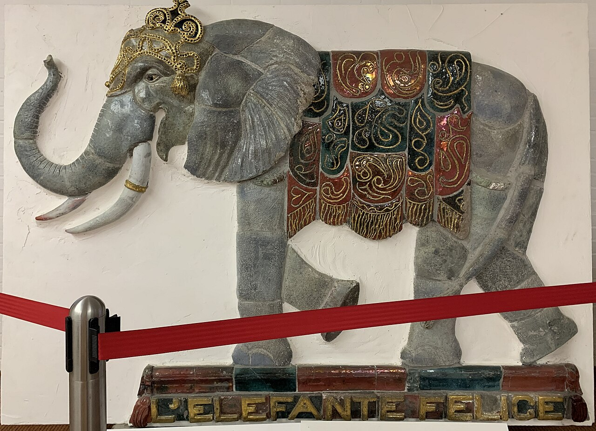
HALL OF MASTERS · 1915–2018Judith Laqueur-Révész
She lived to 102. Meet the ceramic artist through her documented works and their museum records.
Explore her work →Photo: HenkvD · CC BY-SA 4.0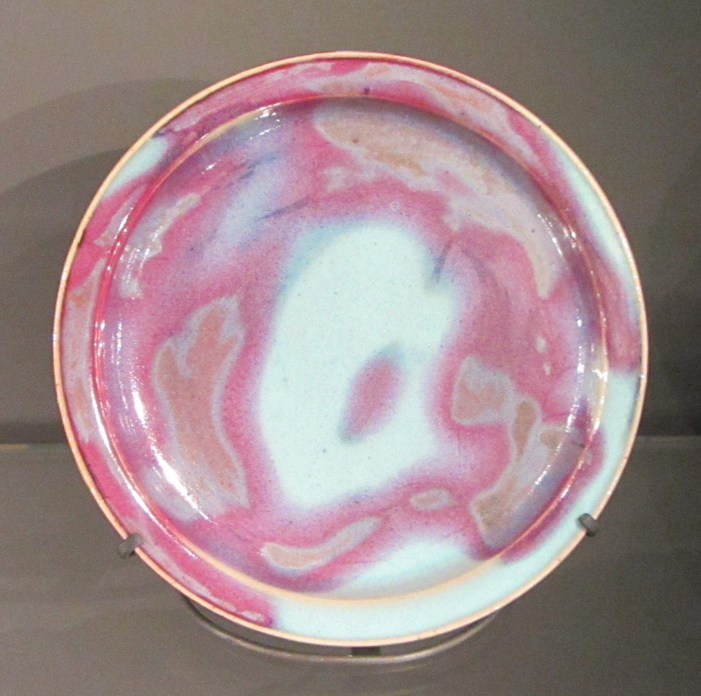
COLOUR FIRST · 10 MINUTESI saw a surface I cannot forget.
Walk the colour wall, open a glaze book, then follow its related family.
Enter the Stained-Glass Atlas →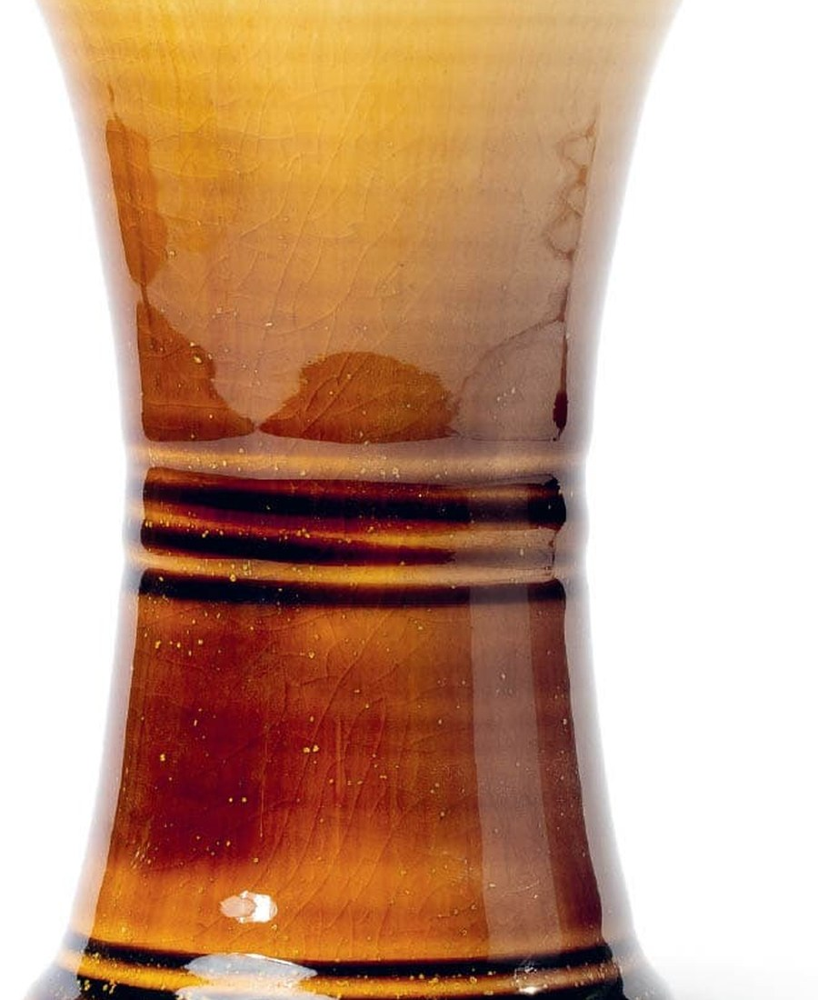
MAKE A TEST · 20 MINUTESI want to layer two glazes.
Build a six-tile comparison that separates chemistry from guesswork.
Open the Layering Laboratory →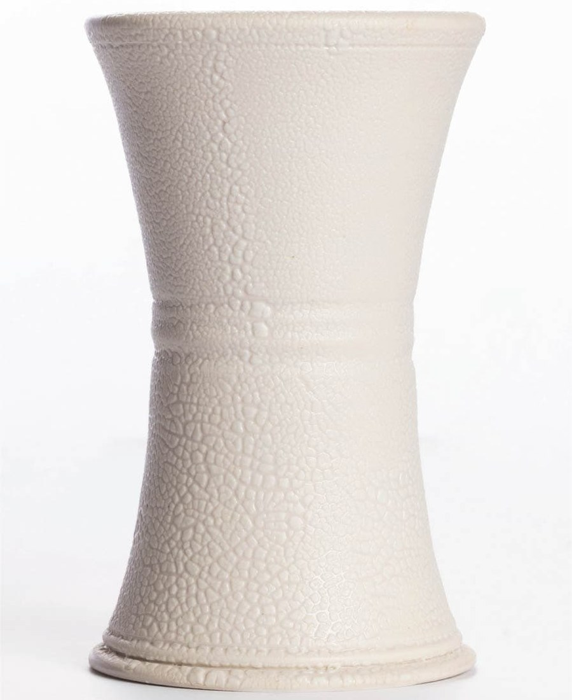
READ THE EVIDENCE · 8 MINUTESSomething went wrong in the kiln.
Identify the defect, understand its mechanism, and choose one useful next test.
Visit the Restoration Room →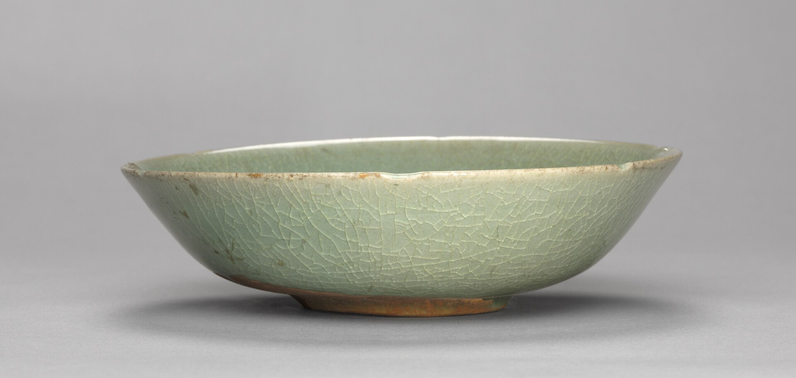
LEARN THE CRAFT · A LIFETIMEI want to become a ceramic wizard.
Follow the apprentice path from clay geology to chemistry, firing, diagnosis and durable functional ware.
Begin the learning path →
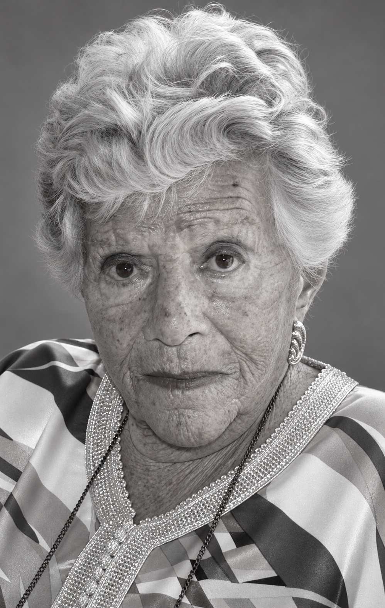
Hall of Masters · Ceramic artist
Judith Laqueur-Révész
15 July 1915 – 17 April 2018 · She lived to 102
Judith Laqueur-Révész worked at every scale: hand-thrown vessels, small ceramic sculptures, sculpted portraits and architectural reliefs. Her ceramics moved beyond the studio into the streets of Amsterdam and onto a villa façade in Italy. Today, her work holds a place in the Nederlands Tegelmuseum.
Vessels · The family collection
Amphorae: colour across the form.
Five amphorae from the collection supplied by Chloé Paula Claes. Explore the spotting, mottling, colour transitions and accents visible across their surfaces. Select an image to inspect it at full size.
These descriptions record photographic appearance. Attribution to Judith is supplied by the family; it has not been independently verified for these objects.

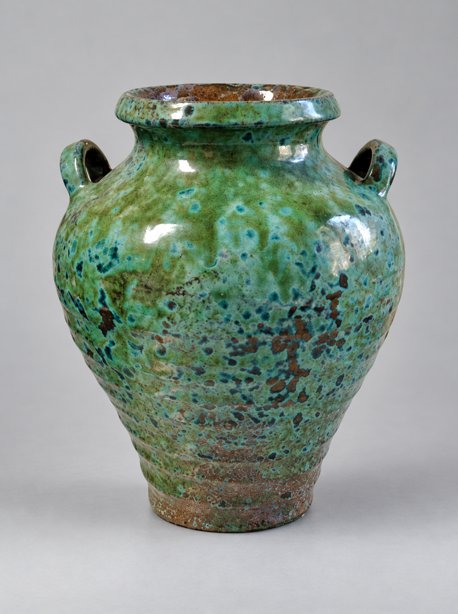
Turquoise spotting over green
Glossy green and turquoise, with rounded blue-green spots, dark brown patches and a browner lower body.

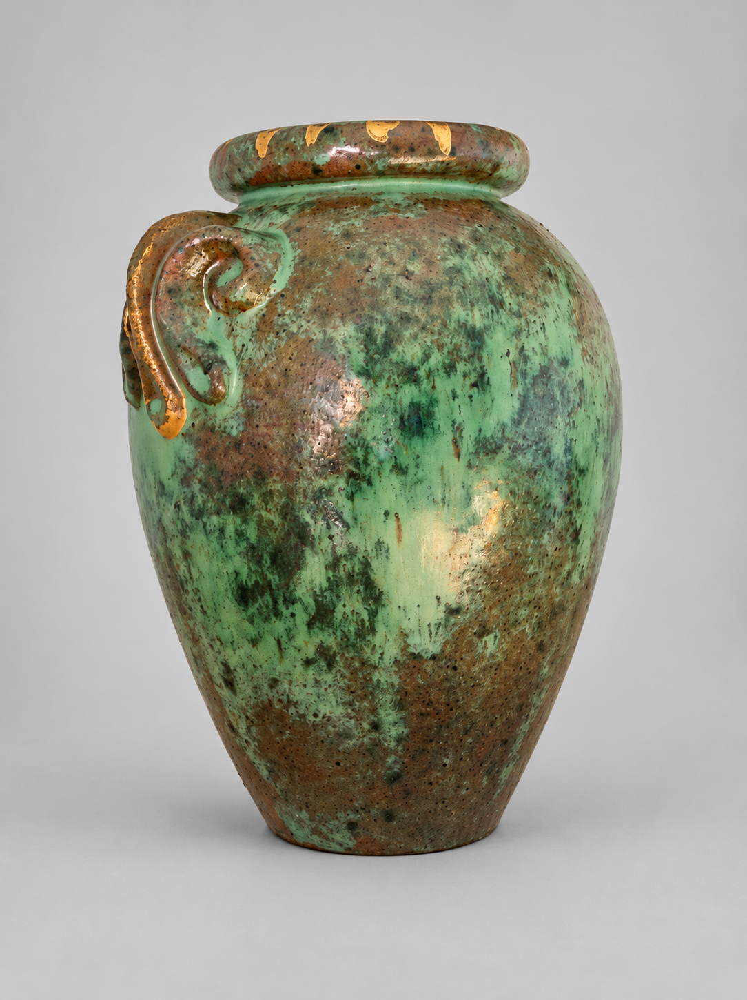
Green and brown with gold-coloured accents
Green and brown mottling, dark speckles and vertical streaks, with gold-coloured accents on the rim and curled handles.

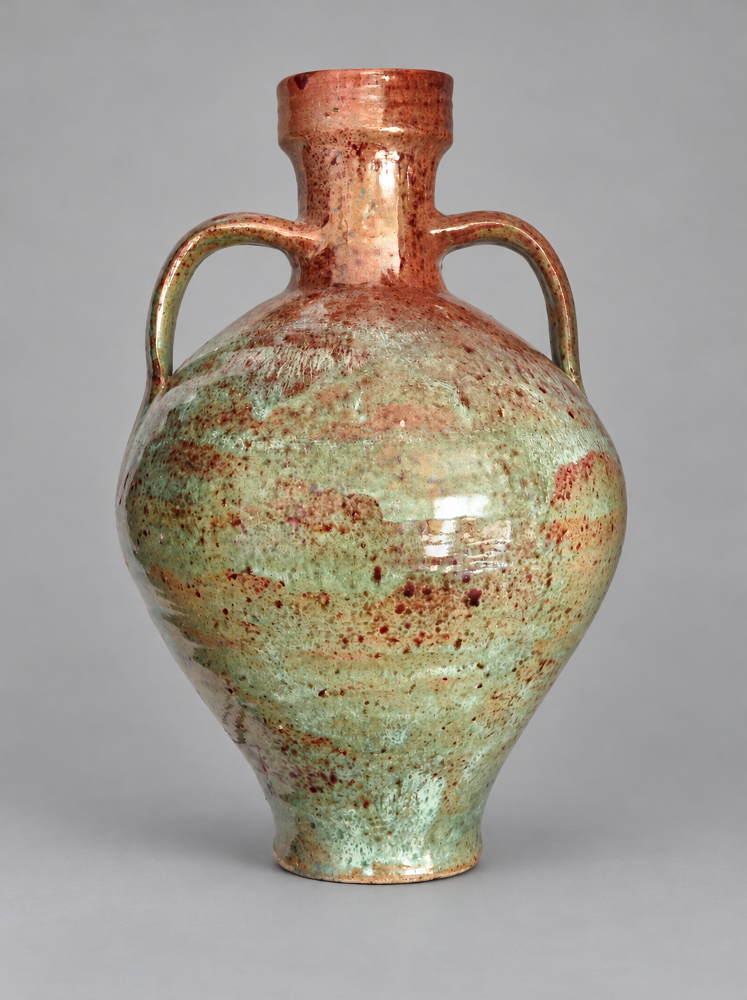
Pale green with a red neck
A glossy red neck and upper handles meet a pale green to cream body, with red-brown speckles, irregular patches and visible horizontal bands.

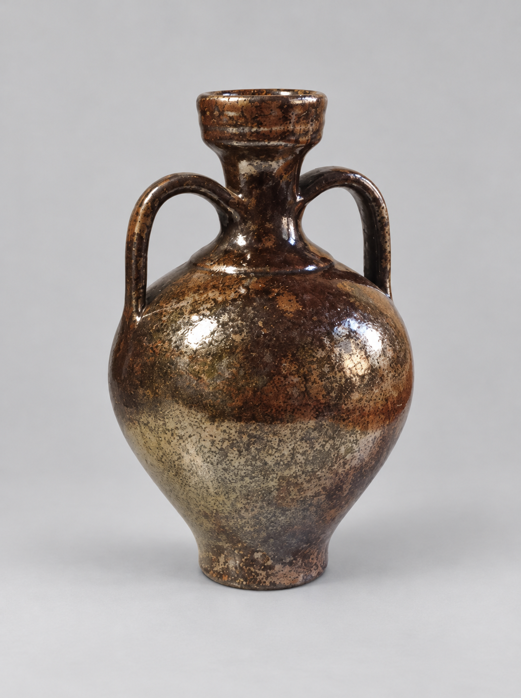
Dark brown with cream mottling
Glossy dark brown across the neck, handles and upper body, with cream-grey mottling concentrated across the lower body.

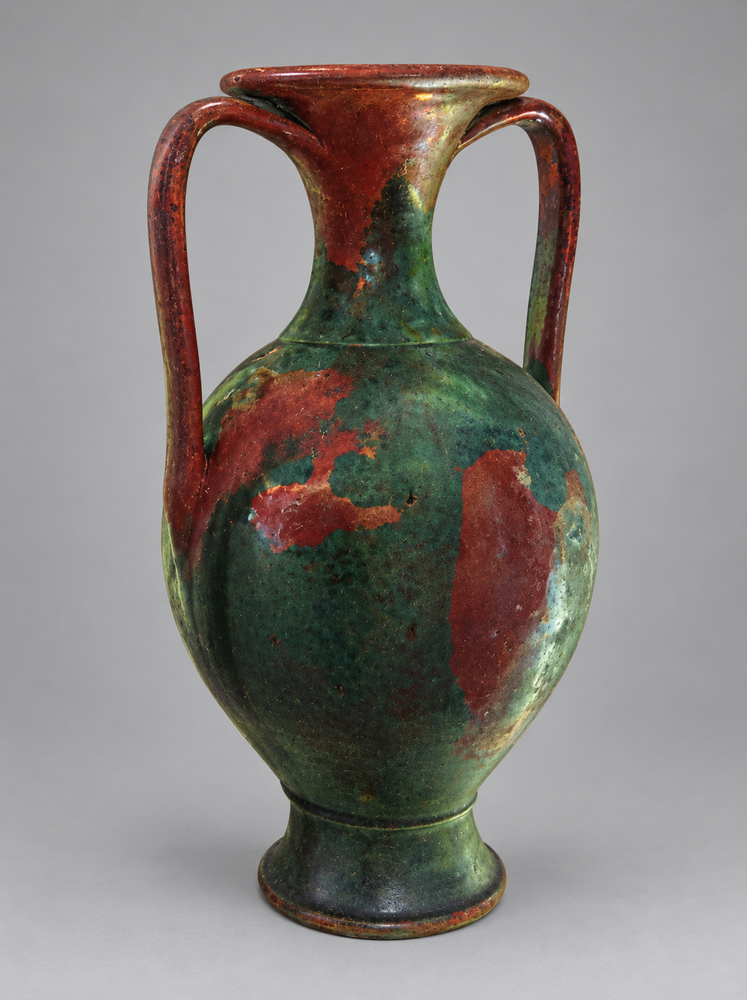
Dark green with red areas
A dark green body with large irregular red areas, a red-brown neck and outer handles, and lighter green along parts of the inner handles.
Museum presentation images from the collection supplied by Chloé Paula Claes · Family collection, catalogue records JLR-009, JLR-010, JLR-011, JLR-012 and JLR-014 · Surface descriptions reviewed 10 October 2026.
A work that crossed borders and time
De Gelukkige Olifant
Made in 1960–61 for the villa L’Elefante Felice in Porto Ercole, Judith’s ceramic elephant occupied its outside wall for more than fifty years. When the villa was demolished in 2012, the relief was saved with part of the wall. Conservators later separated and restored its ceramic elements before mounting them on a new support.
Now in the Nederlands Tegelmuseum, De Gelukkige Olifant is shown alongside other ceramics by Judith. In 2014 the museum named a room after her, recognising a body of work that extends well beyond this celebrated relief.
An earlier public work
The deer frieze in Amsterdam
At Vijzelstraat 115–119, a tile frieze of deer crowns the former shopfront. Judith made it for the building in the late 1930s. The work makes her place in the city’s streets as tangible as the elephant makes it in the museum.
The documented work · An expanding catalogue
A practice larger than one celebrated relief.
Judith worked with vessels, tableware, small sculpture, portraits and ceramics made for buildings. The records below name works and exhibitions that can be traced. They form the beginning of a catalogue, not a claim that her complete oeuvre has been found.
The deer frieze
The tile frieze above the former Brandsteder shopfront at Vijzelstraat 115–119 is attributed to Judith. It is an early example of her ceramics made for a building.
Architectural record and photographs ↗Ceramics and sculpture on show
Algemeen Handelsblad advertised an exhibition of Judith’s new functional ceramics and small sculptures at Toonkamer Toegepaste Kunst, Nieuwe Spiegelstraat 59, Amsterdam, running until 4 December. The notice establishes what she exhibited at the time; it does not identify individual surviving objects.
Read the original newspaper page ↗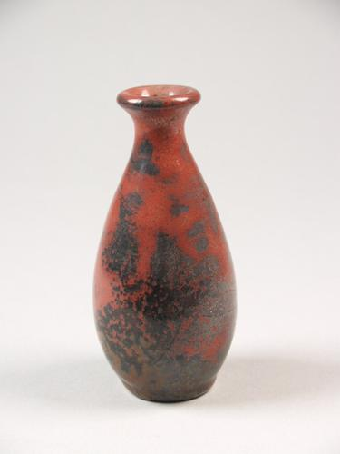
A grey and red stoneware vase
Keramiekmuseum Princessehof records a vase by Judith with an elongated body and flaring neck, covered in grey and red glaze. Its accession number is GMP 1974-107. Its photograph is displayed above with credit and catalogue provenance.
See the collection image and metadata ↗De Gelukkige Olifant
Judith made the ceramic relief for the villa L’Elefante Felice in Porto Ercole. The Nederlands Tegelmuseum records its removal from the demolished villa, conservation and new support. Its current presentation includes other ceramics by Judith.
Read the museum object record ↗Places of work and life
Budapest, Amsterdam, The Hague, Italy.
Judith trained in Budapest with sculptor Márk Vedres before working as a ceramic artist in Amsterdam. Her studio in the Hanedoesstraat, The Hague, is documented in the specialist Capriolus profile. The documentary’s caption points to a photograph of that atelier in the February 1960 issue of Moeder; the original printed page and photographer have not yet been located.
A Hungarian family-history account records Judith saying that she lived beside Lake Garda. An independently published family interview also places her in Italy. Chloé’s family account says she had a studio near the lake. The published sources checked so far do not identify that studio’s address, dates of operation, or works made there. Her documented place of death was Malcesine, on Lake Garda.
The archive trail
The evidence still to open.
In 2019 the Nederlands Tegelmuseum reported receiving a folder from Judith’s estate with press material, exhibition lists and correspondence about the elephant. The museum also announced a presentation of her work alongside Nel Houtman’s. Those records may extend this catalogue and help identify the original atelier photograph.
Two further publications are identified in the specialist bibliography: Judith Laqueur-Revesz en haar werk in Centraal Orgaan Scheppend Ambacht (December 1965), and Dirk Doesberg’s Judith Révész en de olifant in Tegel 39 (2011). The full texts have not yet been checked for this page. The February 1960 Moeder-Vrouwenpost issue is the next source to inspect for the atelier photograph.
Judith, on film
Judith, in her own words.
XON’s Mooi zo Special ‘De gelukkige olifant’ was published on 6 January 2014. Producer René Hazeleger describes it as a revised version of a 2013 documentary, expanded with an interview with Judith at age 98.
Judith’s dates are documented by the Capriolus artist profile ↗. The museum photographs above show documented works; the amphora gallery presents the family collection with its own provenance notes. Catalogue entries distinguish museum records and period documents from later accounts and family information. The family collection awaits individual object documentation; visual resemblance alone cannot establish dates, materials or attribution.
The Apprentice Path
Learn in the order the material demands.
Every lesson ends with something Eleonora can test, recognise and remember.
Room III · The Kiln Chapel
The atmosphere is an ingredient.
Focused lesson · Copper reduction
Green copper can become ruby red—but “more reduction” is not the recipe.
Oxidation, reduction and later reoxidation change copper’s chemical state and the particles that form inside the glaze. Base chemistry, glaze thickness, clay, reduction onset, peak heatwork and cooling all decide whether copper reads green, clear, liver-brown, blush pink or red.
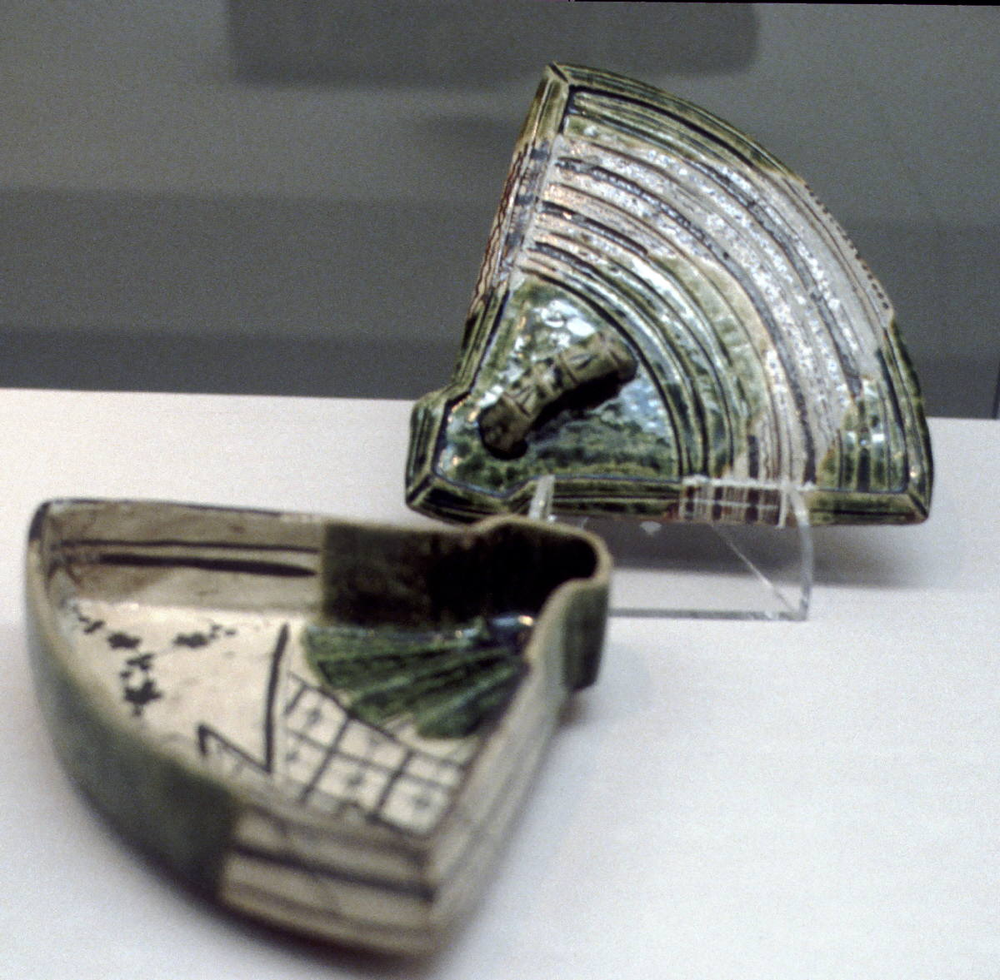
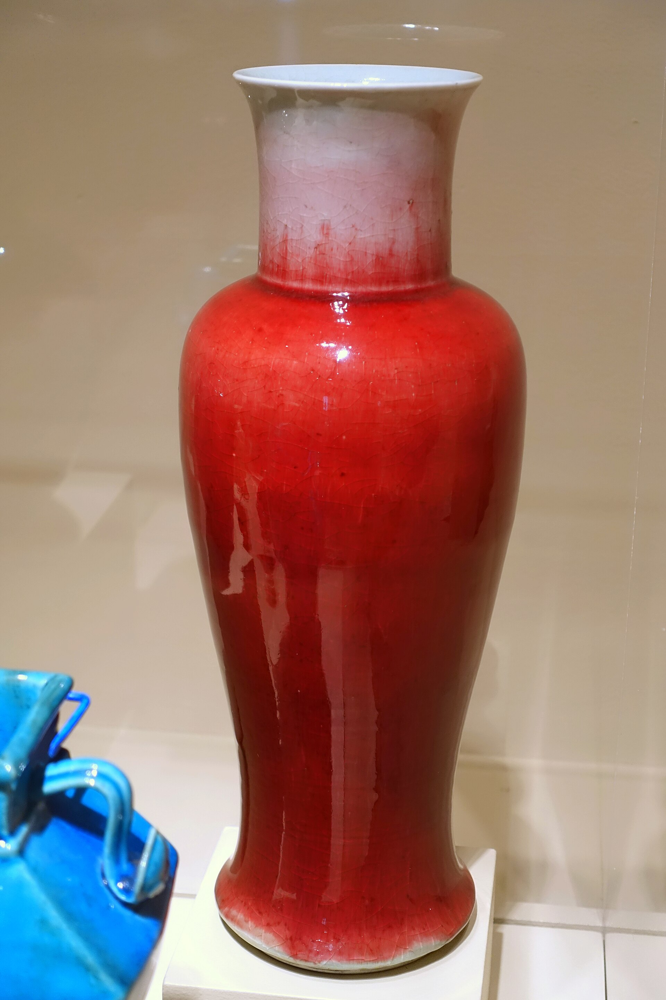
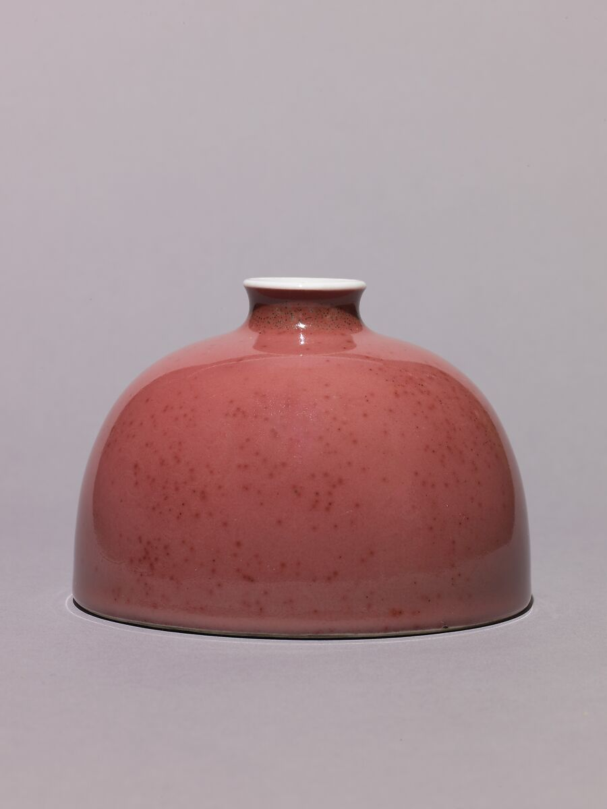
What reduction means
A fuel-burning kiln has less available oxygen than the flame requires. The atmosphere draws oxygen from glaze and body compounds. Electric kilns normally oxidise unless they are specifically designed for another atmosphere.
What to record
Use witness cones. Log reduction onset and strength, pressure or oxygen reading, kiln position, glaze thickness, clay body, peak heatwork and the whole cooling path.
What to test
Use separate firings to compare reduction onset. Keep a green oxidation witness. Change copper or tin only after the atmosphere comparison, never all variables together.
What can go wrong
Too little reduction may leave green; excessive or badly timed reduction can muddy or liver the red. Reoxidation and cooling can erase, shift or develop colour. There is no universal schedule.
Continue with John Britt’s Peach Bloom experiments ↗ and Glazy’s atmosphere and glaze-type concepts ↗.
Room IV · The Materials Archive
Stop memorising bags.
Learn what they contribute.
A recipe lists materials; a glaze balances oxides. The bridge between those views is where control begins.
Room V · The Restoration Room
Read a failure as evidence.
Start with what you can actually see
Room VI · The Hall of Masters
No glaze arrives without a lineage.
Some surfaces belong to communities and kiln traditions rather than one inventor. Where attribution is uncertain, the cathedral says so.
The gallery images are illustrative glaze-surface references, not attributed works by the named makers or historical objects from the periods shown.
Room VII · Eleonora’s Notebook
Your own collection begins with one surface.
Save glaze books and layering plans. Favourites remain on this device, ready to become labelled test tiles and kiln notes.
Room VIII · The Reading Room
sources. pages. One navigable memory.
The source ledger is visible. “Inventoried” means present and readable; “recipe-indexed” means a formula has been structured and cited; “taxonomy-indexed” means its knowledge hierarchy is navigable. The cathedral never calls a source absorbed before it has earned the word.
sources on these shelves